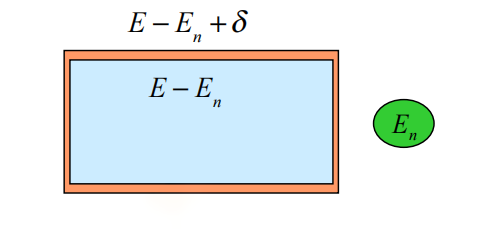
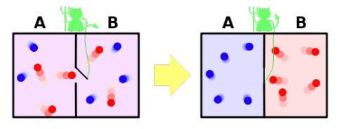
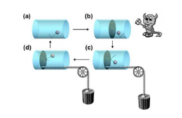
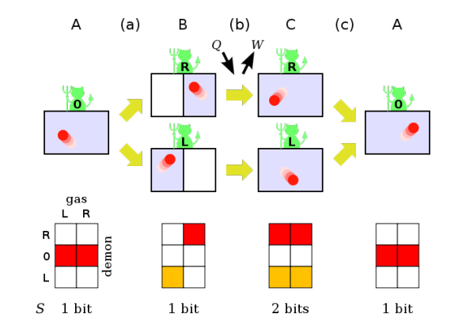

信息论和热力学
玻尔兹曼熵
在热力学中，玻尔兹曼熵为：
SBoltzman=kBlnW
其中 W 为满足宏观条件的微观状态数。
宏观态可用系统的宏观量来描述：
(U,T,V,P,⋯)
而微观状态用每个粒子的状态描述，
(xi,yi,zi,pxi,pyi,pzi)
设粒子数为 N，则共有 6N 个分量，这些分量构成一个空间，称为刘维尔空间或者相空间。
根据等概率原理，一个系统的信息熵可计算为：
H=−∑W1lnW1=lnW
⇒SShannon∝SBoltzman
系综
系综：在想象中构造大量粒子数、体积及势能等结构相同的系统，这些系统彼此独立，分别处于各种可能的微观态。每个系统都代表某一时刻下的真实系统，从而提供了一种在同一时刻观察系统所有可能状态的方法。并通过观察所有系统的概率分布，得到宏观上的统计结果。系综理论是研究系统平衡态及其准静态过程的一般理论。
系综里的系统都是平衡态
| 系综 |
系统 |
宏观不变量 |
概率分布函数 |
| 微正则系综 |
孤立系统：没有能量和粒子交换 |
N,V,E |
P=W1 |
| 正则系综 |
闭系：与一个大热源热平衡，温度恒定，无粒子交换 |
N,V,T |
Pi=Z1e−Ei/kBT |
| 巨正则系综 |
开系：温度和化学势恒定，有能量和粒子交换 |
V,T,μ |
Pi=Ξe−(Ei−Niμ)/kBT |
吉布斯熵
吉布斯熵的定义为：
SGibbs=−kBi∑pilnpi
其中 pi 为第 i 个宏观态的概率。吉布斯熵和香农熵在形式上非常相似，只相差一个 kB，微正则系综的玻尔兹曼熵与吉布斯熵相等
- 系统相当于整个空间的的统计，系综又在这个基础上对整个时间做了一次统计
- 熵归属于系统，但通过系综计算
开放热平衡系综由正则系综描述：
pi=Z1e−βεi，其中 Z 为配分函数，εi为第 i 个状态的能量，β=kBT1，吉布斯熵为
SGibbs=−kBi∑Ze−βεilnZe−βεi=T1(U−F)
这与热力学中自由能 F 的定义相吻合。
热力学熵
热力学熵：一个可逆过程吸收的热量为 đQrev，则热力学熵定义为
dS=TđQrev
对于不可逆过程，熵变可写为：
dS≥TđQ
其中 đQrev表示 Q 的增量而不是微分，因为若 Q 是可微的，则必然有 A(x,y) 和 B(x,y) 满足
dQ=A(x,y)dx+B(x,y)dy
而对于A(x,y) 和 B(x,y)，不一定满足混合偏导数想等定理，即不一定有
∂y∂A=∂x∂B
但可以证明，đQ 除以 T 得到的 dS 是可微的，这就是增量 đ 和全微分 d 的区别。事实上，热量是一个过程量，不同的积分路径得到的热量不同；而熵是一个状态量只与初末两点的状态有关，而与积分路径无关，这也是增量 đQ 和全微分 dS 的区别，热力学熵也是唯一一个由过程量定义的状态量。
考虑一个孤立系统，其从外界吸收的热量 Q=0，因此对于任意的初末状态
S2−S1=∫12dS≥T1∫12đQ=0
这对应于热力学第二定律：孤立系统的熵永不减少：ΔS≥0
再根据热力学第一定律有：
dU=đQ+đW
选择一条可逆路径：
dU=đQrev+đWrev=TđS−pdV
这个式子虽然考虑的是可逆情况，但对于不可逆情况也同样适用，只是TđS 不再单纯是吸收热，而 −pdV 也不再只是做功，这两项都包含热和功
吉布斯熵和功
正则系综中可逆过程的吉布斯熵为：
dSGibbs⇒dU=−kBd(i∑pilnpi)=T1[d(i∑εipi)−i∑pidϵi]=T1(dU+i∑−pidεi)=TdGibbs+i∑pidεi
熵变的第一项为内能，表示每个状态能量的加权求和；第二项为微观功（准静态），表示每个系统能级跃迁所需的能量。
可逆过程一定是平衡态，但平衡态不一定是可逆过程
从吉布斯熵中也能推导和热力学熵相同的结果，上文中也提到了玻尔兹曼熵是吉布斯熵在等概率条件下的特例。所以吉布斯熵是从统计力学得到的最根本的熵，而当粒子数趋向于无穷大并且粒子数除以容量等于一个定值，微正则、正则和巨正则系综是彼此等价的。因此热力学熵是吉布斯熵和玻尔兹曼熵的宏观体现。
对内能做全微分，并根据热力学第一定律得到
dU=d(i∑εipi)=i∑εidpi+i∑pidεi
đQđW=i∑εidpi=i∑pidεi
微观功表示系统在每个能级上的分布不变，而能级有微扰；吸热表示系统的能级不变，而分布发生变化。
冯诺依曼熵
密度算符
在经典系统中已知分布函数就可得到整个体系的信息，而在量子系统中则需要更多的信息，量子系统的量子性依靠密度矩阵 ρ 刻画。对于单体系统，若已知波函数就可得到所有信息，但对于许多个处于不同量子状态的体系，求解波函数是不现实的，解决办法和热力学一样，可以研究量子系统的统计学性质。
密度算符 ρ^ 结合了全部系统的经典布居概率和单个量子态的波函数概率。若整个体系中一个子系统处于 ∣ψi⟩ 态的概率为 pi，那么密度算符就是
ρ^=i∑pi∣ψi⟩⟨ψi∣
其中 ∑ipi=1。波函数按照概率幅叠加，而密度矩阵按照经典概率叠加。
- ρ^ 是厄米算符
- Tr(ρ)=1
- Tr(ρ2)≤1
若用一组正交完备的基将所有量子态展开，则密度算符为
ρ^=i∑pi∣ψi⟩⟨ψi∣=ijk∑piCijCik∗∣j⟩⟨k∣=ij∑ρij∣i⟩⟨j∣
冯诺依曼熵
现在我们来讨论量子体系的熵，能直接使用 ∑i−pilogpi 计算吗？现在不行了，因为每一个量子态都不一定是正交的，即会出现 ⟨ψj∣∣ψi⟩=0，无法找到一个力学量 F^ 能够完美区分 ∣ψi⟩ 和 ∣ψj⟩，此时概率 pi 就失去了意义。
对一个已知密度算符 ρ^ 的量子系统，其信息熵使用冯诺依曼熵描述
SVonNeumann=−kBTr[ρ^lnρ^]
算符值函数通过泰勒展开计算 f(ρ^)=f(0)I+f′(0)ρ^+21f′′(0)ρ^2+⋯=∑nCnρ^n
由于 ρ^ 是厄米算符，总存在一个幺正矩阵 U 能够对角化密度矩阵 UρU†=∑ipi∣i′⟩⟨i′∣
SVonNeumann=−kBTr[U†Uρ^U†Ulnρ^]=−kBTr[Uρ^U†Ulnρ^U†]=−kBTr[(Uρ^U†)ln(U^ρU†)]=−kBTr[i∑pi∣i′⟩⟨i′∣ln(j∑pj∣j′⟩⟨j′∣)]=−kBTr[ij∑pi∣i′⟩⟨i′∣ln(pj∣j′⟩⟨j′∣)]=−kBTr[i∑piln(pi∣i′⟩⟨i′∣)]=−kBi∑pilnpi=SGibbs
其中 pi 已不是密度算符中定义的 pi了，而是对角化密度矩阵后得到的对角元。在对角化后，冯诺依曼熵与吉布斯熵相等。
若一个量子系统中只存在 ∣ψ⟩ 态，则密度算符 ρ^=∣ψ⟩⟨ψ∣，称之为纯态，其冯诺依曼熵为零。
信息论和统计力学
等概率原理
在一个微正则系综中取一个系统作为研究对象，剩下的所有系统看作是“热库”，由于样本系统远小于系综，因此热库仍可以看作是一个微正则系综。子系统和热库之间可以交换能量而不能交换粒子，因此系统的能量 En 和热库的能量是不确定的，但他们的总能量等于系综的能量 Etot，是一个常数。
但由于总系统能量的不确定性，即使系统处于能量 En 确定的状态，热库的能量仍旧存在涨落。
Etot−En≤j∑Nεj≤Etot−En+δ

能壳内的微观状态数就是能量范围内 [Etot−En,Etot−En+δ] 的微观状态数
系统处于能量为 En 状态下的概率为：
P(E,En)=ΩN+1(E,δ)ΩN(E−En,δ)
其中 ΩN(E−En,δ) 表示子能壳的微观状态数，ΩN+1(E,δ) 表示总能壳的微观状态数。N 的巨大数值使得 ΩN+1≈ΩN，上式分子和分母都是无穷大的数，我们使用玻尔兹曼熵中的 ln 函数来弱化这一影响，En 远小于 E，有Talor展开
S(E−En)=S(E)−dEdS(E)En
因此系统的概率分布可写为
P(E,En)=ΩN+1(E,δ)ΩN(E−En,δ)=ΩN+1(E,δ)ΩN+1(E−En,δ)=e−kBβEn
其中 β=dEdS(E)=T1，若通过配分函数完成归一化，我们就推导出微正则系综中的一个子系统满足正则系综分布。
最大熵原理
考虑粒子所处的 n 个状态 x={x1,x2,⋯,xn}，其概率分布 {pi} 是未知的，只已知 ⟨f(x)⟩=∑ipif(xi)，∑ipi=1，如何求出另一个 ⟨g(x)⟩? 两个方程确定 n 个未知数，可能吗？最大熵原理告诉我们是可以的。
最大熵原理：当一个分布的熵最大时，这就是合理的分布。对 S=−kB∑ipilnpi 做拉格朗日乘子法
δ[−λi∑pi−μi∑pif(xi)−kBi∑pilnpi]=0
前两项为数，加入后不影响对 S 求变分 δS=0，解得
pi=e(−λ−μf(xi))/kB/Z
再将该解代入 ⟨f(x)⟩=∑ipif(xi) 和 ∑ipi=1 便解得 λ 和 μ。
实际上，μ 是一个涌现常数，可通过与热力学对比得知 μ=1/kBT，λ 中含有配分函数的信息，⟨f(x)⟩ 可以通过对配分函数求偏导得出。在统计物理中 f(xi)=ϵi，⟨f(x)⟩=U 是一个可以在实验中测定的量。
最大数原理
一个系统与宇宙中其他系统处于热平衡态，那么波函数可写为
∣Ψ⟩=m,n∑Cm,n∣m⟩⊗∣Bn⟩
对这个态求密度矩阵的迹
ρ^=TrB(∣Ψ⟩⟨Ψ∣)→e−βH^
温度也就自然涌现出来了。通过对宇宙中的所有纯态求迹，密度算符就类似于正则分布形式。
麦克斯韦妖和信息擦除原理
我们知道超导计算不会产生焦耳热，那么这就不会消耗任何能量吗？不，还会存在一个最小能量。
麦克斯韦妖
如下图所示，一个能检测粒子运动状态的小妖控制着一个无损耗的开关，最终使得不同运动速度的粒子处于不同区域，最后就可形成温差用于对外做功，这与热力学第二定律相悖。

麦克斯韦的想法：热力学第二定律在小粒子数下失效，这与现代观念相符。
希拉德单粒子热机

经过上图所示一个循环后，一个粒子的动能转化为对外功
W=∫V/2Vpdv=∫V/2VvkBTdv=kBT ln2
可以看到这正好对应于 50% 的信息熵，因为挡板移动的方向是由粒子的位置决定的，而这就是 50% 的不确定度。
信息擦除原理
Landauer 对麦克斯韦妖提出了解释：1 bit 的信息擦除必然伴随着环境熵的增加，耗散的能量为
Q=kBTln2
其中 kB 为玻尔兹曼常数，T 为环境温度。

如上图所示，一个循环后，小妖所获取的信息必须重置，而擦除 1 bit 信息的过程就需要消耗能量。